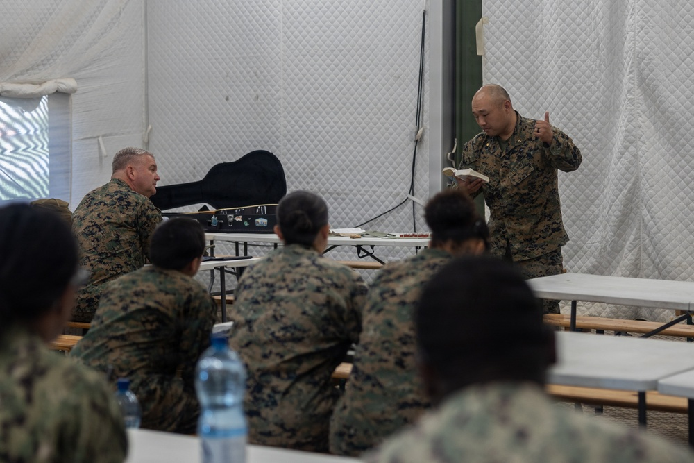

Lance Cpl. Talan Werner, U.S. Marine Corps · DVIDS 9741965 · Public domain · Navy Lt. Cmdr. Naofumi Nozawa, a Marine Air Control Group 48 chaplain, reads the Bible during a religious service at Baltic Operations 26 in Skrunda, Latvia, June 7, 2026.
Military Times
New program lets troops train as military chaplains without leaving the service
Defense Secretary Pete Hegseth announced the Chaplain In-Service Procurement Program on Friday, and the Navy issued its implementing message the same day, Military Times reports. Service members who feel called to ministry can pursue graduate theological education while staying in uniform. Officers need two to eight years of active duty and a rank of O-3 or below. Enlisted applicants need four to 10 years and at least the rank of E-5. Each military department can fund up to 25 new participants a fiscal year, with the Navy and Marine Corps sharing one cap. Participants owe two years of active duty for each year of training, up to six. The Navy has not yet announced application dates or selection board schedules.
Military Times · Read source →